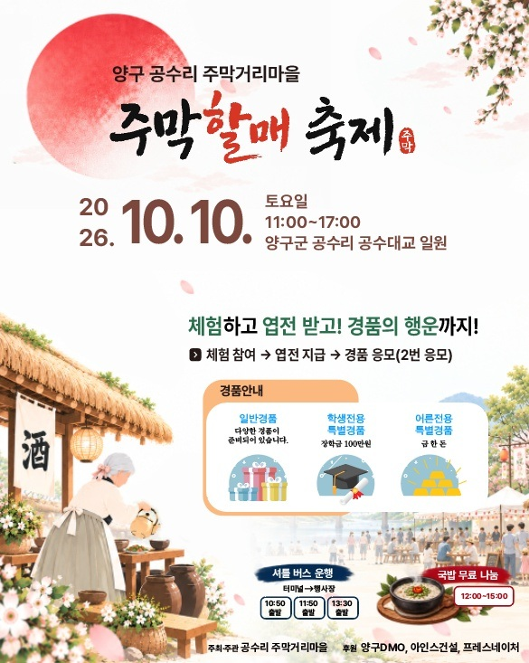

2026 · 양구 공수리
가을 하루, 정겨운 마을로 놀러오세요
공수리마을
주막할매축제
2026. 10. 10. 토요일11:00–17:00 · 공수대교 근처 정자 일대

공수리에서 즐기기
축제 부스 안내
이번 축제의 놀이와 체험, 먹거리를 만나보세요.
안내문을 누르면 크게 볼 수 있습니다.
전체 14개 안내
방문 안내
방문 전에 확인해주세요
입장 팔찌 안내
종이 팔찌는 축제 운영부스에서 받으실 수 있습니다. 팔찌로 이용할 수 있는 부스와 응모권 안내는 위의 ‘종이 팔찌 안내’에서 확인해주세요.
체험 참여 안내
부스별 참여 방법과 필요한 엽전은 각 안내문을 눌러 확인해주세요. 전체 부스는 ‘체험부스 한눈에 보기’에 정리되어 있습니다.
운영 변경 안내
날씨와 현장 상황에 따라 운영 내용이 달라질 수 있습니다. 현장 운영 안내를 확인해주세요.
오시는 길
강원특별자치도 양구군
양구읍 공수리
공수대교 근처 정자 일대
ARCHIVE
축제 자료실
축제의 소식과 사진, 기록을 만나보세요.